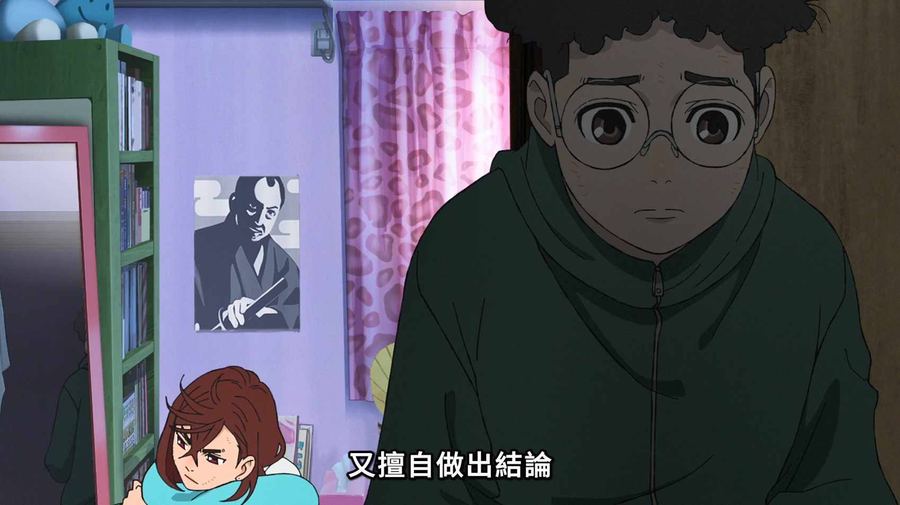
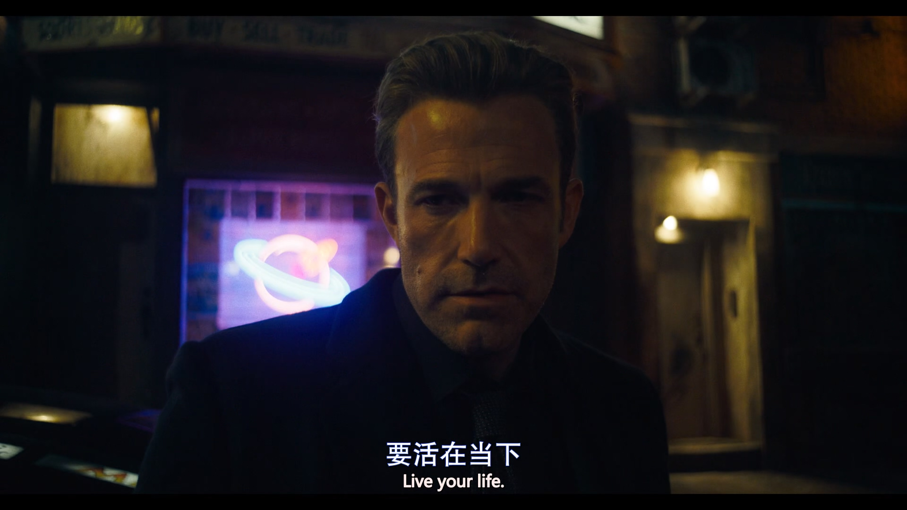
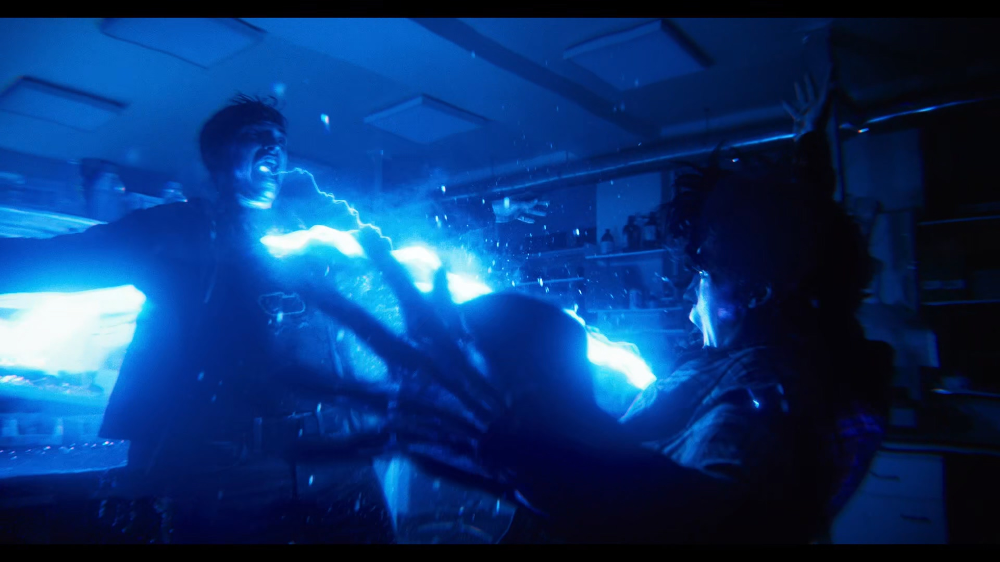
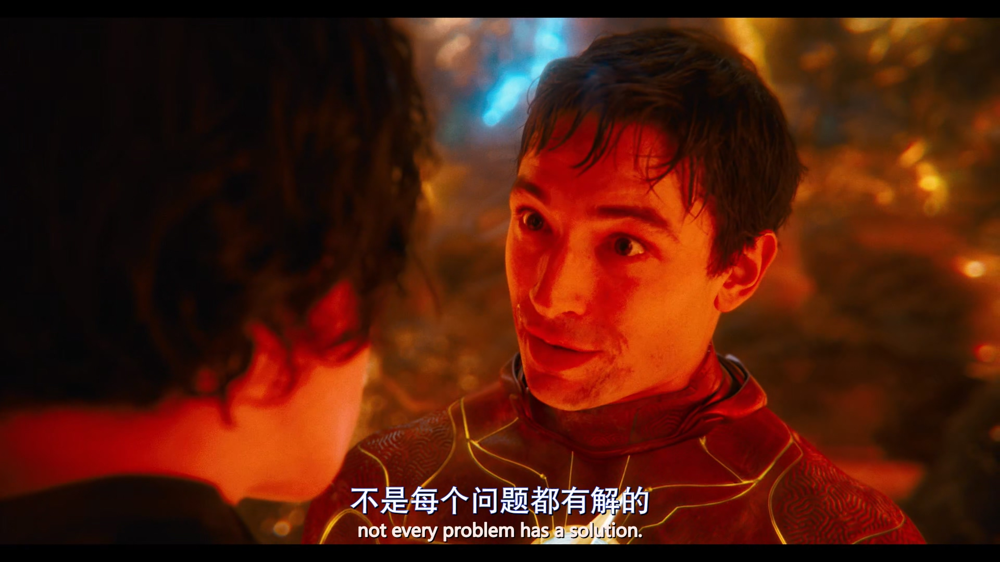
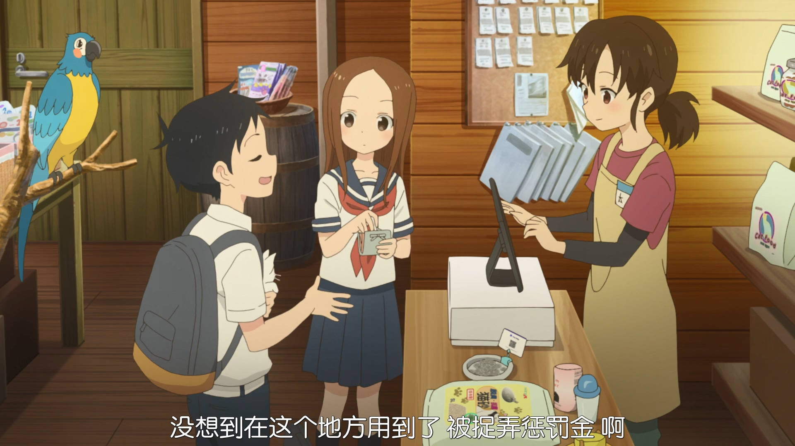
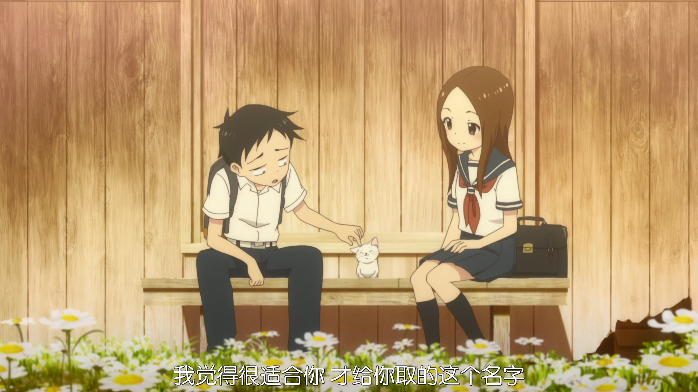

摘要：
整理影视中看到的名场面；耐人寻味的话。
已观看名单
| 影视名称 | 修改时间 | 备注 |
|---|---|---|
| 无职转生~到了异世界就拿出真本事 | 2025-6-11 | 二刷回顾，第二季末尾几章感动常在 |
| 胆大党/当哒当 | 2025-4-25 | 看完还行，坐等S2 |
| 闪电侠 2023 | 2025-5-04 | 氛围差点意思，节奏很爽 |
| 你好 世界 | 2025-6- | 节奏一坨，情感线麻麻地，冲着点子看完 |
动漫
无职转生
拥有守护对象的你是一名战士。
那素未谋面的神与我无关，真正拯救我的人是你，鲁迪乌斯。
我现在已经是这个家的支柱了，陪伴在家人身边并保护她们，是身为丈夫和父亲的责任。（为了不让家人受苦遇难，）我要去帮助家人。
胆大党/当哒当
擅自决定别人是怎么样的人，又擅自做出结论。

观后感：前几集和红衣母亲的那一集很惊艳，后面的任务对话稍不自然，作画张力挺好，爽番，刷一次差不多了。
电影
闪电侠
你说这话什么意思？什么叫“相信”？我爸本来就是无辜的。我妈也应该活着的，这不是我相不相信的问题。对不起，我现在对于此事无可奉告。
巴里，正是这些伤痕造就了今天的我们。不要去改变这些事，也没有什么事需要你改变。不要留念过去，要活在当下，别让你经历过的那些悲剧定义你。

（一电双响）

不是每个问题都有解的，有时候你要学会放下。

观后感：时空之碗的表现效果很赞。没能看到末日场景下的那段剧情：末日下蝙蝠侠和小丑一队//TODO:
擅长捉弄的高木同学 - 剧场版
没想到在这个地方用到了 被捉弄惩罚金 啊。

美奈：这个夏天，三个人想做的100件事！
友加里：真的要写100件吗？（尬）
美奈：当然啦！我们要快一点哦，初三的夏天，人生只有这一次啊。呐呐呐，快点快点！
西片：雪又白又漂亮，我觉得很适合你，才给你取的这个名字…
高木：没办法啊西片，它才出生一个月，还没有听说过雪，对吧？
西片：这样啊，你还没见过雪啊。到了冬天你第一次见到雪的时候，会长得有多大啊。

西片：长大后叫声就会变成“喵~”。可以吗，取这样的名字？
高木：咪咪现在的叫声还是眯，我想让它记住。
决定了的事就认真做完吧，做完了这100件事，初中三年级的夏天不就结束了吗…不想要结束啊，我想把它一直延续下去，直到永远。
海鸥。猫用项圈。（图不错，截了）
观后感：温馨有趣的男女互动、纯真悸动的情感表达、相互关心照顾的行动，是熟悉的恋爱番味道。隔了两年多翻出来看，还是甜得那么美好。搞怪捉弄的情景少了一些，温馨互动upup。